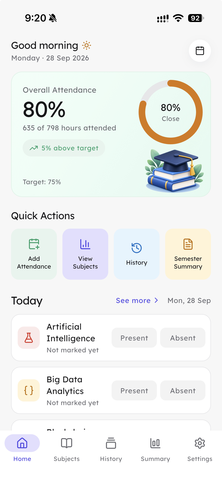
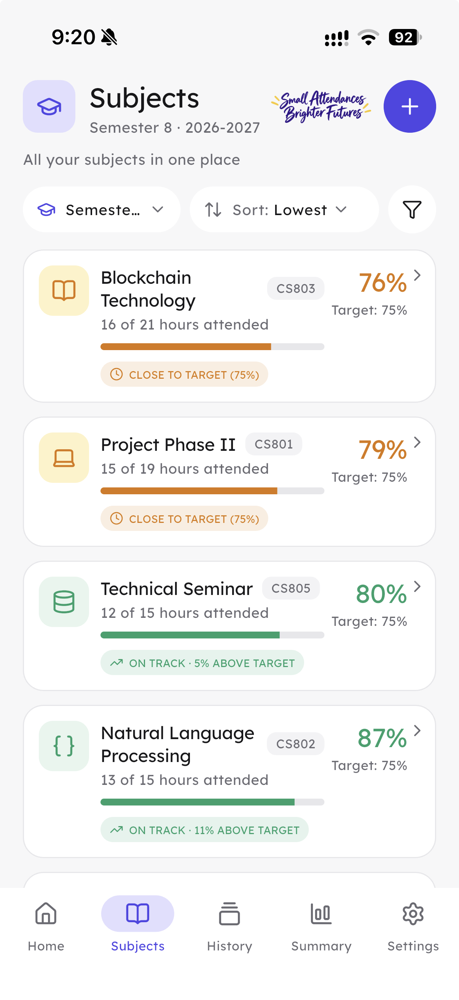
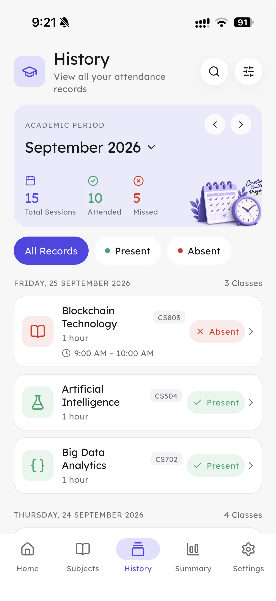
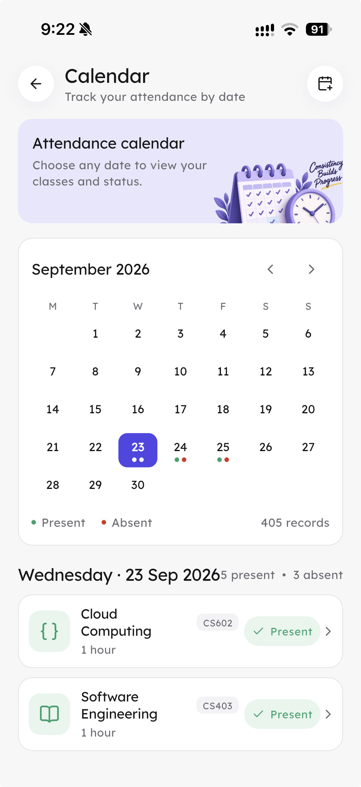

Mark the register
Record present or absent while the class is still fresh. No end-of-week reconstruction.
See supportFor the class register you actually keep
Mark today’s classes, check a subject before it becomes a problem, and keep the semester’s numbers in one place.


Subjects shows the current picture, History gives you the trail, and Calendar lets you check a particular day without hunting through a notebook.



Attendly is deliberately small: a quick mark, a useful subject view, and enough history to explain the number you are looking at.
Record present or absent while the class is still fresh. No end-of-week reconstruction.
See supportOpen the course that is on your mind instead of averaging everything together.
See supportUse the current total to decide whether you need a conversation, a reminder, or simply the next class.
See supportWhen a number looks wrong, the support page has the quickest route to the answer.